1 Tutorium – Administration einer Versammlung
Dieses Tutorial ist auf dem Stand von OpenSlides 2.0.x.
In diesem Tutorial sehen Sie am Beispiel der Mitgliederversammlung eines Kleingartenvereins, wie Sie OpenSlides im Präsentationsmodus bedienen.
Zunächst lernen Sie, OpenSlides allgemein einzurichten und Folien auf dem Projektor zu zeigen. Anschließend können Sie die einzelnen Tutorials für Tagesordnung, Teilnehmerverwaltung, Anträge, Wahlen und Dateien durcharbeiten.
Alle Tutorials gehen von folgenden Rahmenbedingungen aus:
Der Verein „Schreberverein Nord e. V.“ hält am 2. März 2017 seine jährliche Mitgliederversammlung ab. Auf der Versammlung werden verschiedene Berichte gehalten und über eine Satzungsänderung abgestimmt. Außerdem finden Wahlen zum Vorstand und zum Beirat statt.
Auf den nächsten Seiten folgen die einzelnen Tutorials.
1.1 Einrichtung von OpenSlides
Zunächst müssen Sie OpenSlides auf dem Server installieren, den Server starten und einige Einstellungen für Ihre Veranstaltung vornehmen. Danach können Sie Ihre ersten Folien einrichten und auf dem Projektor zeigen.
1.1.1 Installation und Start des Servers
Installieren Sie OpenSlides wie in ↓ beschrieben. Starten Sie anschließend den Server wie in ↓ erläutert. Sie sehen jetzt die Login-Seite von OpenSlides in Ihrem Browser. Loggen Sie sich als Administrator ein, indem Sie als Benutzernamen admin und als Passwort admin eingeben und auf Anmelden klicken.\begin_inset Separator latexpar\end_inset

Anschließend sollten Sie sofort das Administrator-Passwort ändern. Klicken Sie dazu oben rechts in der Kopfzeile
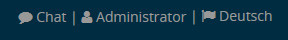
auf Administrator und dann auf Passwort ändern. Geben Sie in die entsprechenden Felder Ihr altes Passwort admin und anschließend Ihr neues Passwort ein. Wiederholen Sie das neue Passwort im dritten Formularfeld. Bestätigen Sie die Eingabe mit Speichern. Weitere Informationen zur Benutzerverwaltung finden Sie in ↓.
1.1.2 Konfiguration des Systems
Geben Sie die Rahmendaten Ihrer Veranstaltung ins System ein. Wechseln Sie dazu zum Menüpunkt Einstellungen\SpecialChar menuseparatorAllgemein und geben Sie die Veranstaltungsdaten wie folgt ein:\begin_inset Separator latexpar\end_inset
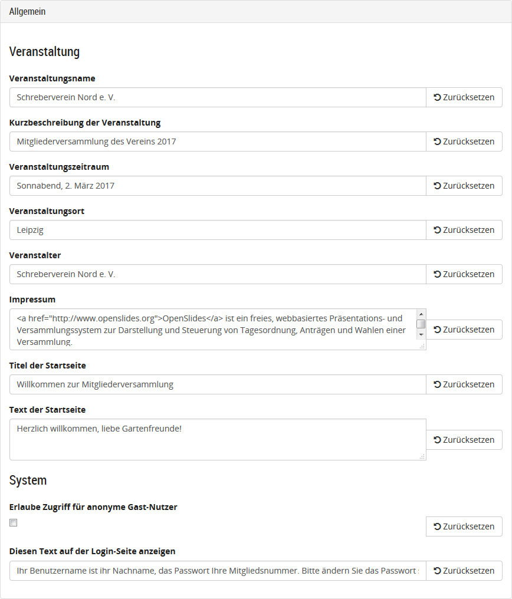
Das Impressum verweist voreingestellt auf OpenSlides. Es erscheint als Fußzeile in der Startseite. Der Text im Feld Diesen Text auf der Login-Seite anzeigen erscheint auf dem Login-Fenster, wenn sich die Teilnehmer einloggen:\begin_inset Separator latexpar\end_inset
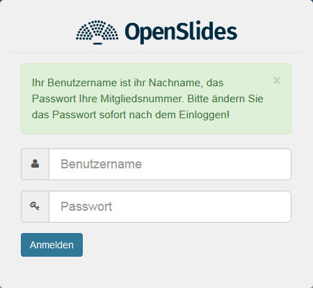
Alle Änderungen in den Einstellungen werden sofort gespeichert. Alle Einstellungen sind im Detail in ↓ beschrieben.
1.1.3 Technische Einrichtung im Veranstaltungsraum
Im Präsentationsmodus Single schließen Sie den Projektor an Ihren Computer an und schieben ein zweites Browserfenster mit der Projektoransicht auf den Projektor. In den anderen Modi richten Sie ein Netzwerk ein, schließen Sie einen beliebigen Computer an den Projektor an und öffnen im Vollbildmodus die Seite mit der Projektoransicht. Die Projektoransicht bekommen Sie in einem neuen Browsertab zu sehen, indem Sie auf die Live-Vorschau klicken. Diese ist auch unter der URL /projector/ zu finden.
1.2 Tagesordnung verwalten
In diesem Teil lernen Sie, wie Sie Einträge in der Tagesordnung erstellen und verwalten.
1.2.1 Konfiguration der Tagesordnung
Gehen Sie zunächst im Menüpunkt Konfiguration\SpecialChar menuseparatorTagesordnung\SpecialChar menuseparatorAllgemein zum Unterpunkt Beginn der Veranstaltung. Hier können Sie den genauen Beginn der Veranstaltung einstellen. Zum Beispiel: 02.03.2017 10:00
Die weiteren Einstellungen der Tagesordnung sind in ↓ beschrieben.
1.2.2 Eingabe der Tagesordnung
Die Tagesordnung enthält nach einer Neuinstallation noch keine Einträge. Legen Sie zunächst einige Einträge an. Klicken Sie dazu im Menüpunkt Tagesordnung oben rechts auf
und geben Sie einen Eintrag wie folgt ein:

Wie sie sehen, können Sie den Text frei formatieren und dort auch Bilder einfügen. Im Feld Anhang können Sie aus allen in OpenSlides verfügbaren Dateien einen Anhang wählen. Mehr zu Dateien ist in ↓ beschrieben.
Klicken Sie abschließend auf Speichern.
Klicken Sie abschließend auf Speichern.
Erweitern Sie nun die Tagesordnung um Einträge mit folgenden Titeln:
- Bericht des Vorstands
- Satzungsänderung
- Gartenfest
- Sonstiges
- Wahlen der Vereinsämter
Klicken Sie abschließend auf den Knopf 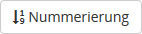
und die Tagesordnung wird nummeriert. Die Übersicht über die Einträge sieht nun so aus:\begin_inset Separator latexpar\end_inset
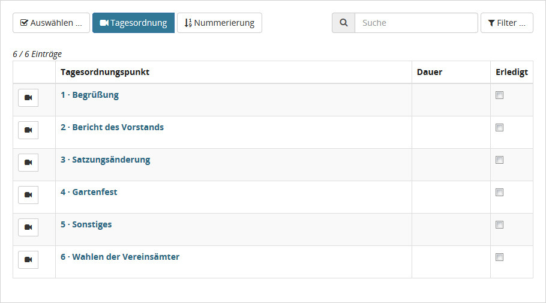
Sie können nun nachträglich die Reihenfolge der Einträge verändern und auch Tagesordnungspunkte zu Unterpunkten verschieben. Klicken Sie dazu oben auf den Knopf 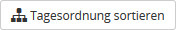
und ziehen Sie dann mit gedrückter linker Maustaste den Punkt Sonstiges an die letzte Stelle. Den Punkt Gartenfest ziehen Sie unter Bericht des Vorstands und schieben ihn etwas nach rechts, bis er dort einrastet. Gehen sie durch Drücken des Knopfes 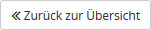
zurück zu Übersicht und drücken Sie
um die Nummerierung zu aktualisieren. Die Übersicht sieht nun so aus:
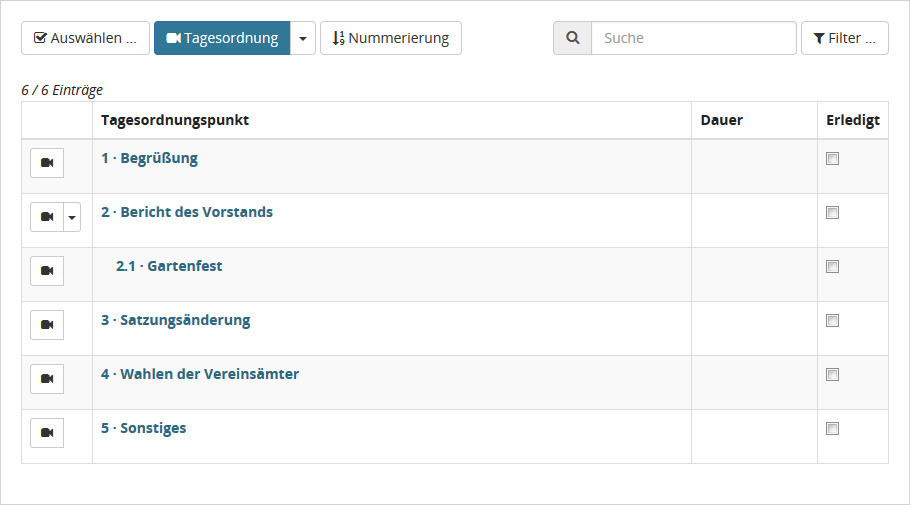
1.2.3 Einrichtung eigener Folien
Eigene Folien werden verwendet, um Dinge außerhalb der offiziellen Tagesordnung zu behandeln. Technisch sind sie jedoch dasselbe wie ein Tagesordnungspunkt.
Um z. B. den Teilnehmern mitzuteilen, dass es eine Kaffeepause gibt, erstellen Sie einen neuen Tagesordnungspunkt:
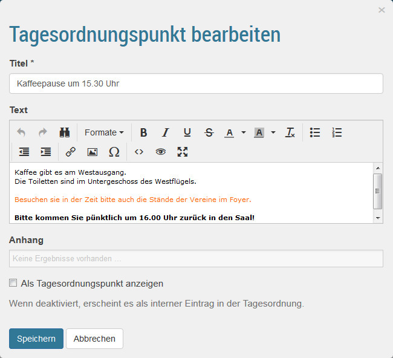
Dabei ist es wichtig, dass die Option Als Tagesordnungspunkt anzeigen nicht ausgewählt ist.
Eigene Folien werden in der Übersicht rosa unterlegt, um anzuzeigen, dass sie nicht Teil der offiziellen Tagesordnung sind.
1.2.4 Projektion der Tagesordnung
Die komplette Tagesordnung wird projiziert, wenn Sie auf das Symbol
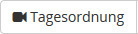 drücken. Durch Drücken von neben dem Symbol, können Sie wählen, ob alle Tagesordnungspunkte oder nur die Hauptpunkte angezeigt werden, also in unserem Fall ohne den Punkt Gartenfreunde. Eigene Folie werden in der Tagesordnung nicht projiziert.
neben dem Symbol, können Sie wählen, ob alle Tagesordnungspunkte oder nur die Hauptpunkte angezeigt werden, also in unserem Fall ohne den Punkt Gartenfreunde. Eigene Folie werden in der Tagesordnung nicht projiziert.
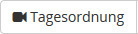 drücken. Durch Drücken von
neben dem Symbol, können Sie wählen, ob alle Tagesordnungspunkte oder nur die Hauptpunkte angezeigt werden, also in unserem Fall ohne den Punkt Gartenfreunde. Eigene Folie werden in der Tagesordnung nicht projiziert.
Einzelne Tagesordnungspunkte werden projiziert, indem Sie auf das Symbol 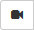
vor dem entsprechenden Eintrag klicken. So können Sie eigene Folien projizieren.
1.2.5 Ändern von Tagesordnungspunkten
Der Inhalt von Tagesordnungspunkten kann jederzeit geändert werden, insbesondere während der Veranstaltung. Dazu zeigen sie mit der Maus auf einen Tagesordnungspunkt und es erscheint ein Kontextmenü:\begin_inset Separator latexpar\end_inset

Ändern Sie zum Beispiel den Inhalt des Tagesordnungspunktes Bericht des Vorstandes, indem Sie dort auf Bearbeiten klicken und einen Text zum Tagesordnungspunkt eingeben.
Als Alternative für das Bearbeiten können Sie im Kontextmenü auf Quick-Edit klicken und so oft benötigte Dinge wie die Dauer ändern.\begin_inset Separator latexpar\end_inset
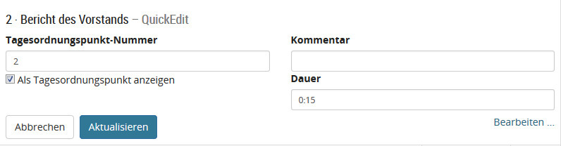
1.2.6 Redelisten
OpenSlides verfügt bei jedem Tagesordnungseintrag über eine Redelistenfunktion. Um eine Redeliste zu erstellen oder zu bearbeiten, klicken Sie im Kontextmenü des jeweiligen Tagesordnungspunkts auf Redeliste. Alternativ klicken Sie auf den Tagesordnungspunkt und dann auf 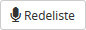
.
Setzen Sie sich selbst auf die Redeliste, indem sie auf 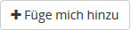
klicken. Wenn Sie Teilnehmer angelegt haben, wie es in 1.3.1↓ beschrieben ist, können Sie jeden Teilnehmer auf die Redeliste setzen.
Projizieren Sie die Redeliste nun durch Klicken auf  . Durch Drücken von 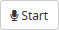
starten Sie Ihre Rede. Ihr Name wird nun im Projektor angezeigt. Um die Rede zu beenden, klicken Sie auf
. Durch Drücken von 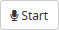
starten Sie Ihre Rede. Ihr Name wird nun im Projektor angezeigt. Um die Rede zu beenden, klicken Sie auf  . Gibt es mehrere Redner, kann man mit Klicken auf 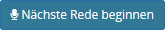
die aktuelle Rede beenden und die nächste beginnen.
. Gibt es mehrere Redner, kann man mit Klicken auf 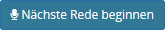
die aktuelle Rede beenden und die nächste beginnen.
. Durch Drücken von 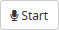
starten Sie Ihre Rede. Ihr Name wird nun im Projektor angezeigt. Um die Rede zu beenden, klicken Sie auf
. Gibt es mehrere Redner, kann man mit Klicken auf 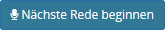
die aktuelle Rede beenden und die nächste beginnen.
In der Rubrik Letzte Redner/innen können sie sich die letzten Redner als Liste anzeigen lassen. Ein Teil dieser Liste wird auch projiziert, je nach den Einstellungen. Für Details dazu siehe ↓.
Jede Redeliste ist erst einmal offen. Das heißt, dass sich jeder angemeldete Teilnehmer auf die Redeliste setzen kann. Um die Redeliste zu schließen, damit das nicht mehr möglich ist, klicken Sie auf den Knopf  . Der Knopf ändert sich nun zu 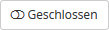
und der neue Zustand wird im Projektor rot angezeigt:\begin_inset Separator latexpar\end_inset
. Der Knopf ändert sich nun zu 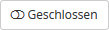
und der neue Zustand wird im Projektor rot angezeigt:\begin_inset Separator latexpar\end_inset
. Der Knopf ändert sich nun zu 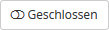
und der neue Zustand wird im Projektor rot angezeigt:\begin_inset Separator latexpar\end_inset
Wie man die Redeliste modifiziert und einen Countdown mit einer Rede verknüpft ist in ↓ erklärt.
Weitere Details zur Tagesordnung finden Sie in ↓.
1.3 Teilnehmer verwalten
In diesem Teil lernen Sie, wie Sie die Teilnehmer Ihrer Veranstaltungen im System erfassen. Im Präsentationsmodus brauchen Sie grundsätzlich nur diejenigen Teilnehmer erfassen, die das System verwalten, Anträge stellen oder unterstützen, auf Redelisten stehen oder bei Wahlen kandidieren.
1.3.1 Anlegen eines Teilnehmers
Sie können die Teilnehmer einzeln eintragen oder, wie in ↓ beschrieben, importieren. Eingetragenen Personen, die das System verwalten sollen, müssen die entsprechenden Berechtigungen zugewiesen werden.
Zum Anlegen eines neuen Teilnehmers wechseln Sie zum Menü Teilnehmende und klicken Sie oben rechts auf 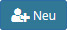
. Geben Sie als Beispiel diesen neuen Teilnehmer ein:\begin_inset Separator latexpar\end_inset
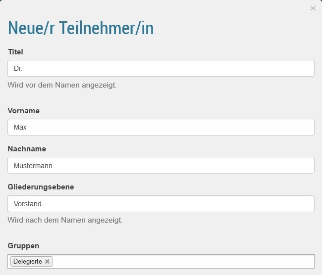
Wiederholen Sie diese Schritte und geben Sie folgende weitere Teilnehmer und Teilnehmerinnen ein: Peter Müller, Prof. Dr. Franziska Meyer, Luise Schmidt und Dr. Hans Schulze.
Die Angabe des Titels und der Gliederungsebene ist optional. Über die Gruppe wird festgelegt, welche Berechtigungen der Teilnehmer hat, also ob er z. B. wählen und Anträge stellen darf. Mehr zu Gruppen ist in ↓ beschrieben.
1.3.2 Bearbeiten eines Teilnehmers
Im Menü Teilnehmende ist eine Liste mit allen Teilnehmern zu sehen:\begin_inset Separator latexpar\end_inset
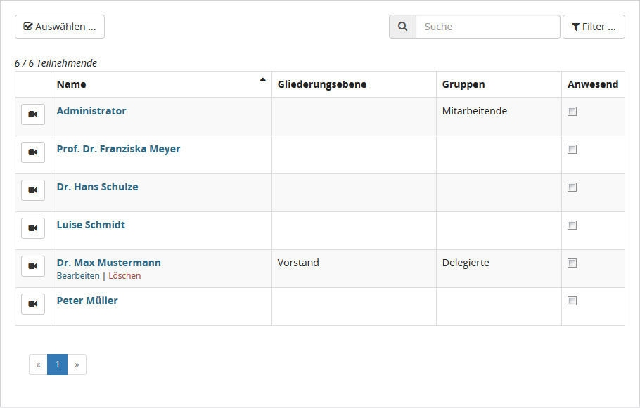
Klicken Sie zum Bearbeiten beispielsweise beim Teilnehmer „Max Mustermann“ unterhalb des Namens auf Bearbeiten und weisen ihm zusätzlich die Gruppe Mitarbeitende zu.
In der Teilnehmerliste kann jederzeit eingestellt werden, ob ein Teilnehmer anwesend ist. Dies ist für Wahlen und die Dokumentation der Veranstaltung wichtig.
1.3.3 Passwort eines Teilnehmers
Beim Anlegen eines Teilnehmers wird automatisch ein zufälliges Erst-Passwort gesetzt, falls man nicht selbst ein Passwort angibt. Sie können das Erst-Passwort der PDF-Datei entnehmen, die durch Klick auf das Symbol 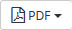
und dann auf Zugangsdatenliste angezeigt wird. Dieses PDF ist so ausgelegt, dass man es ausdrucken und so jedem Teilnehmer seine Zugangsdaten mitteilen kann.
Bitten Sie jeden, dem Sie sein Erst-Passwort aushändigen, dieses nach dem ersten Login zu ändern.
Um als Administrator das Passwort von zum Beispiel Max Mustermann neu zu setzen, klicken Sie in der Teilnehmerliste unterhalb des Namens auf Bearbeiten und tragen Sie im Feld Voreingestelltes Passwort ein neues Passwort ein. Anschließend klicken Sie auf Reset und dann erst auf Speichern.
Detaillierte, weitere Informationen zur Teilnehmerverwaltung finden Sie in ↓.
1.4 Countdowns und Mitteilungen
Unterhalb der Live-Vorschau gibt es die Rubriken Countdown und Mitteilungen. Um z. B. mitzuteilen, wo es das Mittagessen gibt, klicken Sie auf  und rechts oben in der Mitteilung auf 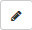
. Geben Sie nun den Text „Das Mittagessen gibt es in 5 Minuten im Foyer, 1. Stock, Aufgang B.“ ein und klicken anschließend auf 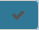
. Klicken Sie nun auf
, wird die Mitteilung so angezeigt:\begin_inset Separator latexpar\end_inset
und rechts oben in der Mitteilung auf 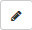
. Geben Sie nun den Text „Das Mittagessen gibt es in 5 Minuten im Foyer, 1. Stock, Aufgang B.“ ein und klicken anschließend auf 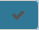
. Klicken Sie nun auf
, wird die Mitteilung so angezeigt:\begin_inset Separator latexpar\end_inset
und rechts oben in der Mitteilung auf 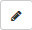
. Geben Sie nun den Text „Das Mittagessen gibt es in 5 Minuten im Foyer, 1. Stock, Aufgang B.“ ein und klicken anschließend auf 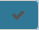
. Klicken Sie nun auf
, wird die Mitteilung so angezeigt:\begin_inset Separator latexpar\end_inset

Um nun die 5 min als Countdown laufen zu lassen, klicken Sie auf
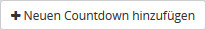 und dann auf . Geben Sie als Beschreibung „Mittagessen startet in“ und als Startzeit „5:00“ ein und klicken anschließend auf das Symbol . Klicken Sie nun auf um den Countdown anzuzeigen. Mit dem Klick auf der aktuellen Mitteilung wird diese wieder von Projektor entfernt. Klicken Sie auf 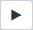 um den Countdown zu starten.\begin_inset Separator latexpar\end_inset
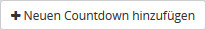 und dann auf . Geben Sie als Beschreibung „Mittagessen startet in“ und als Startzeit „5:00“ ein und klicken anschließend auf das Symbol . Klicken Sie nun auf um den Countdown anzuzeigen. Mit dem Klick auf der aktuellen Mitteilung wird diese wieder von Projektor entfernt. Klicken Sie auf 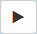 um den Countdown zu starten.\begin_inset Separator latexpar\end_inset
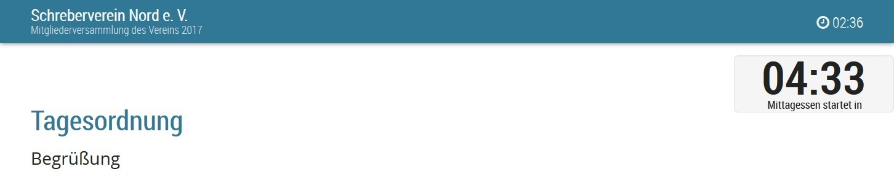
Die Zeit des Countdowns wird unter 30 s orange eingefärbt. Nach dem Ablauf wird die Zeit rot eingefärbt und läuft negativ.
Besonders sinnvoll sind Countdowns für Reden. Um für jede Rede einen Countdown mitlaufen zu lassen, wechseln Sie in das Menü Einstellungen\SpecialChar menuseparatorTagesordnung und wählen dort die Option Countdown mit der Redeliste verkoppeln aus. Nun werden alle Countdowns automatisch gestartet, wenn eine Rede begonnen wird. Welchen Countdown Sie projizieren oder ob sie ihn überhaupt einen projizieren, haben Sie in der Hand.
1.5 Anträge verwalten und behandeln
In diesem Teil lernen Sie, Anträge in das System einzugeben und zu verwalten sowie, wie Sie während der Veranstaltung einen Antrag behandeln und eine Abstimmung durchführen.
1.5.1 Eingabe eines bereits vorliegenden Antrags
Vor Beginn der Veranstaltung liegen bereits Anträge an die Versammlung vor, welche ins System gebracht werden sollen. Wechseln Sie zum Menü Anträge und klicken auf
.
Geben Sie als Beispiel einen Antrag, mit dem die Vereinssatzung so geändert werden soll, dass der Beirat mehr Mitglieder hat, wie folgt ein:
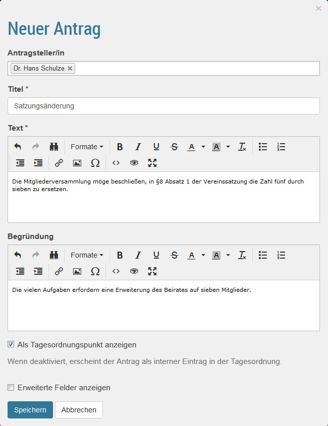
Wie sie sehen, gibt es im Textfeld schon eine Einleitung „Die Versammlung möge beschließen,“. Diese können Sie ändern oder abschalten, siehe dazu ↓. Dass Sie den Antrag als Tagesordnungspunkt anzeigen, ist optional.
Erstellen Sie auf gleiche Weise eine weiteren Antrag mit dem Titel „Änderung der Geschäftsordnung“.
Die Antragsseite sieht nun wie folgt aus:\begin_inset Separator latexpar\end_inset
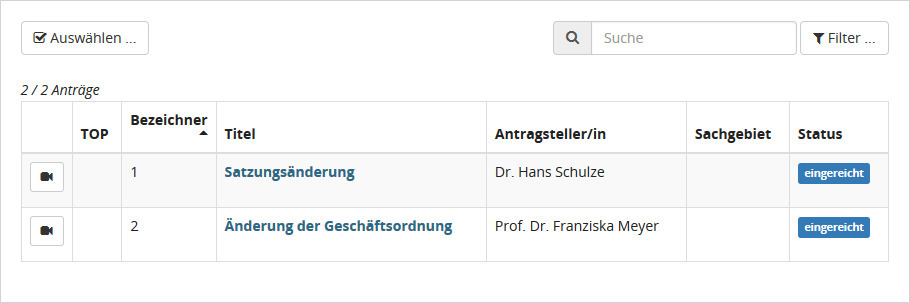
Anträge können auch während der Veranstaltung angelegt werden.
1.5.2 Behandlung eines Antrags
Angenommen die Versammlungsleitung ruft den Antrag zur Satzungsänderung auf. Klicken Sie zunächst in der Antragsübersicht auf
vor dem Antrag. Dieser wird nun projiziert:\begin_inset Separator latexpar\end_inset
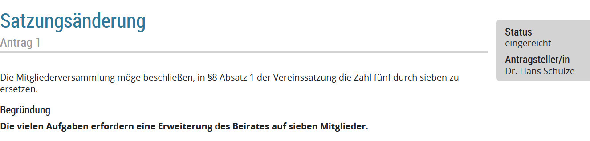
Um schnell zur Antragsverwaltung zu wechseln, können Sie auf den Titel des Antrags klicken.
Nach Abschluss der Diskussion ruft der Vorsitzende zur Abstimmung auf. Klicken Sie im rechten Kasten auf Neue Abstimmung und tragen Sie das Abstimmungsergebnis wie folgt in das Formular ein:
Der Vorsitzende stellt fest, dass der Antrag angenommen ist. Klicken Sie deshalb auf der im rechten unteren Kasten unter „Antrag verwalten“ auf Annehmen.
Das Projektorbild sieht nun wie folgt aus:
1.6 Wahlen durchführen
In diesem Teil lernen Sie, wie Sie Wahlen auf Ihrer Versammlung mit OpenSlides begleiten.
1.6.1 Anlegen von Wahlen
Vor Veranstaltungsbeginn sind die anstehenden Wahlen vorzubereiten. Gehen Sie dazu ins Menü Wahlen. Legen Sie nun eine neue Wahl an indem sie oben auf
klicken. Geben Sie nun eine Wahl wie folgt ein:\begin_inset Separator latexpar\end_inset
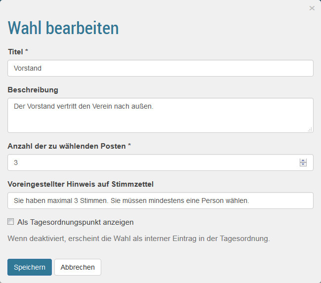
Geben Sie auf die gleiche Weise eine weitere Wahl ein:
Name: Beirat
Beschreibung: Der Beirat unterstützt den Vorstand.
Anzahl der zur Wahl stehenden Posten: 7
Die Wahlübersicht sieht nun so aus:\begin_inset Separator latexpar\end_inset

1.6.2 Durchführung einer Wahl
Klicken Sie in der Wahlübersicht auf
vor Vorstand. Die Wahl wird nun projiziert. Nun klicken Sie auf den Namen der Wahl Vorstand.
Setzen Sie sich mit
auf die Kandidatenliste. Es können alle bei OpenSlides angelegten Teilnehmer hinzugefügt werden. Wählen Sie nun aus der Liste 4 weitere Kandidaten aus.
Wir gehen nun davon aus, dass die Kandidatenliste feststeht. Damit sich die Kandidaten vorstellen können, klicken Sie oben auf
. Die Redeliste ist technisch identisch zu der Redeliste eines Tagesordnungspunkts, die in 1.2.6↑ behandelt wurde. Wie Sie sehen, sind bereits alle Kandidaten auf der Redeliste. Sie können noch weitere Redner hinzufügen.
Um die Wahl zu beginnen, klicken Sie unten auf 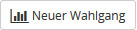
. Dadurch hat sich die Phase der Wahl automatisch auf Im Wahlvorgang geändert. Das Projektorbild sieht nun so aus:\begin_inset Separator latexpar\end_inset
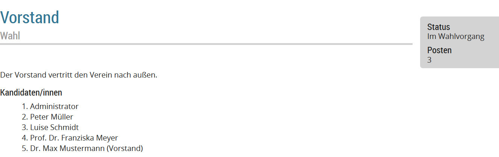
Da die Wahl von Personen eine geheime Wahl ist, müssen Stimmzettel erstellt werden. Klicken Sie dafür auf 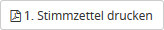
. Der Stimmzettel sieht so aus:\begin_inset Separator latexpar\end_inset
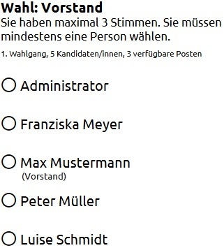
und kann ausgedruckt und verteilt werden.
Wir nehmen nun an, dass die Wahl ausgezählt wurde und die Ergebnisse vorliegen. Tragen Sie daher nun die Ergebnisse dieses 1. Wahlgangs ein, indem Sie auf  klicken. In die Eingabemaske tragen Sie als Beispiel bei Administrator 23, bei Frau Meyer 38, bei Herrn Mustermann 17, bei Herrn Müller 20, bei Frau Schmidt 22, bei Gültige Stimmen 109, bei Ungültige Stimmen 1 und bei Abgegebene Stimmen 110 ein.
klicken. In die Eingabemaske tragen Sie als Beispiel bei Administrator 23, bei Frau Meyer 38, bei Herrn Mustermann 17, bei Herrn Müller 20, bei Frau Schmidt 22, bei Gültige Stimmen 109, bei Ungültige Stimmen 1 und bei Abgegebene Stimmen 110 ein.
klicken. In die Eingabemaske tragen Sie als Beispiel bei Administrator 23, bei Frau Meyer 38, bei Herrn Mustermann 17, bei Herrn Müller 20, bei Frau Schmidt 22, bei Gültige Stimmen 109, bei Ungültige Stimmen 1 und bei Abgegebene Stimmen 110 ein.
Wir nehmen an, dass 50 Personen an der Wahl teilgenommen haben und dass die Satzung vorsieht, dass die Personen gewählt sind, die mindestens die Hälfte der Stimmen bekommen hat, wie Personen an der Wahl teilgenommen haben. Es wurde also im 1. Wahlgang nur Frau Meyer gewählt. Klicken Sie daher nur bei ihr auf das Symbol
vor ihrem Namen. Um die Wahl zu veröffentlichen, klicken Sie auf  . Im Projektor wird erst einmal nur die Kandidatenliste angezeigt, in der Frau Meyer als Gewählte mit einem Stern markiert ist:\begin_inset Separator latexpar\end_inset
. Im Projektor wird erst einmal nur die Kandidatenliste angezeigt, in der Frau Meyer als Gewählte mit einem Stern markiert ist:\begin_inset Separator latexpar\end_inset
. Im Projektor wird erst einmal nur die Kandidatenliste angezeigt, in der Frau Meyer als Gewählte mit einem Stern markiert ist:\begin_inset Separator latexpar\end_inset
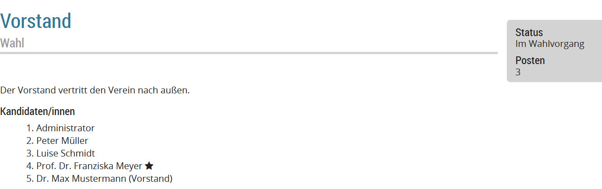
Sie können nun entscheiden, ob auch die Stimmenanzahl veröffentlicht wird. Da das gewünscht ist, klicken Sie nun auf  . Es wird nun dies projiziert:\begin_inset Separator latexpar\end_inset
. Es wird nun dies projiziert:\begin_inset Separator latexpar\end_inset
. Es wird nun dies projiziert:\begin_inset Separator latexpar\end_inset
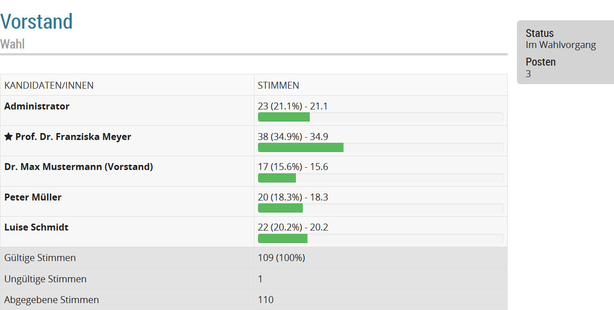
Als Erklärung können Sie nun vielleicht eine Mitteilung mit dem Inhalt „Es haben 50 Personen teilgenommen, zur Wahl notwendig waren daher 25 Stimmen.“ anzeigen, wie Sie es in 1.4↑ gelernt haben.
Da der Vorstand aus 3 Personen bestehen muss, ist ein zweiter Wahlgang notwendig. Klicken Sie daher auf
und
. Geben Sie fiktive Ergebnisse ein und markieren Herrn Mustermann und Administrator als gewählt. Zuletzt klicken Sie auf
und
und ändern oben die Phase auf Abgeschlossen. Wenn Sie oben auf 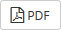
klicken, erhalten Sie ein PDF mit dem Wahlergebnis, das Sie für die Nachbereitung der Veranstaltung verwenden können.
und
und ändern oben die Phase auf Abgeschlossen. Wenn Sie oben auf 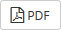
klicken, erhalten Sie ein PDF mit dem Wahlergebnis, das Sie für die Nachbereitung der Veranstaltung verwenden können.
Auf die gleiche Weise können Sie nun auch die die Wahl des Beirats durchführen. Sie werden feststellen, dass als Wahlmethode automatisch eine Ja-Nein-Enthaltungs-Wahl bezüglich eines jeden Kandidaten ausgewählt wird, wenn es weniger oder gleich viele Kandidaten wie Plätze gibt:\begin_inset Separator latexpar\end_inset
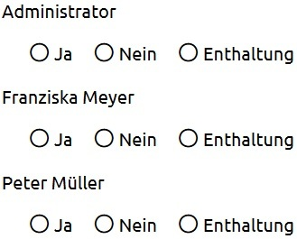
Mehr zu Wahlen und deren Einstellungen erfahren Sie im Detail in ↓.
1.7 Dateien hochladen und verwalten
Wie man Dateien, zum Beispiel Bilder, bei OpenSlides hochlädt und projiziert, ist in ↓ erklärt.
1.8 Nach einer Veranstaltung
Am Ende der Versammlung können Sie sich für das Protokoll einige Dokumente direkt aus OpenSlides holen. Klicken Sie jeweils im Menü Tagesordnung, Anträge, Wahlen und Teilnehmende rechts oben auf
. Mehr zur Nachbereitung ist in ↓ beschrieben.
Alle weiteren Funktionen von OpenSlides und Details zu den im Tutorium behandelten Funktionen, finden Sie in ↓. Wie Sie Anpassungen an OpenSlides vornehmen, erfahren Sie in ↓.
Viel Spaß weiterhin mit OpenSlides!